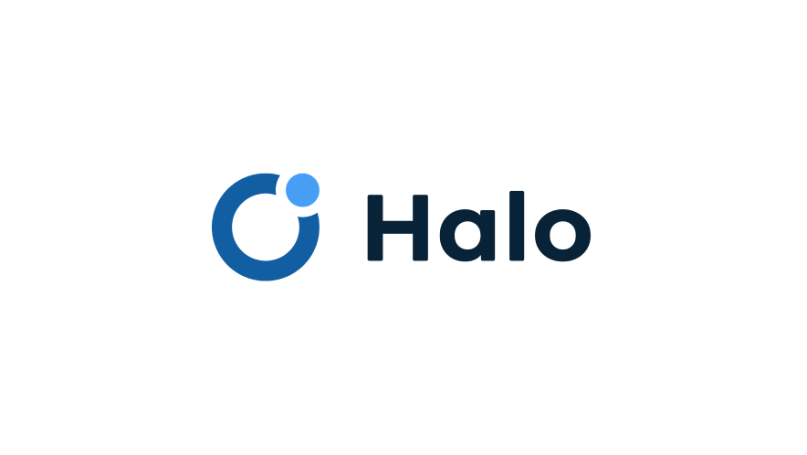
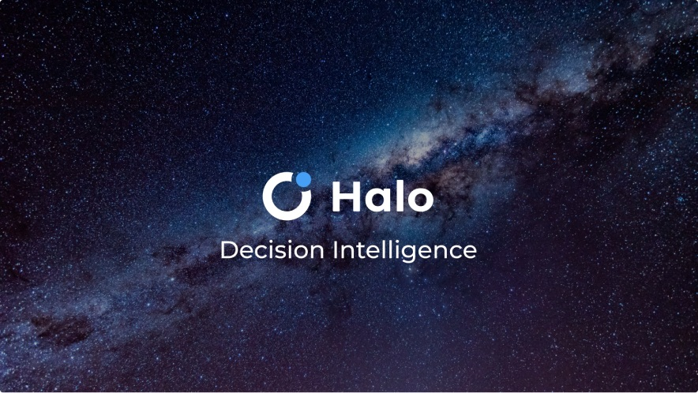
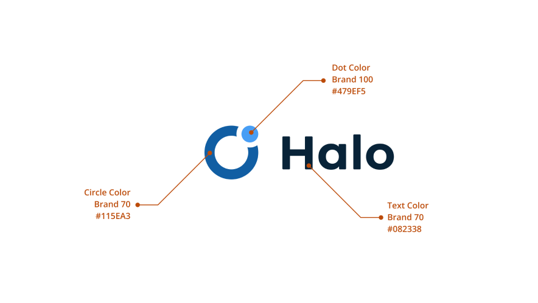
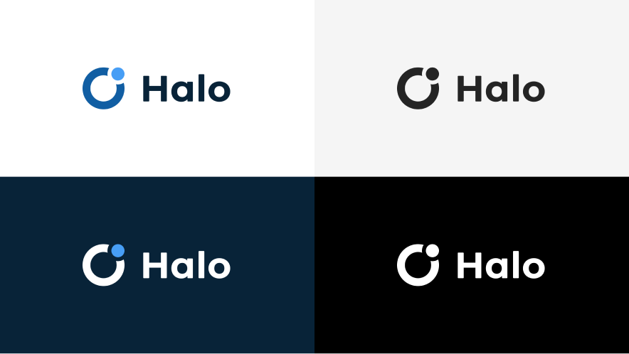
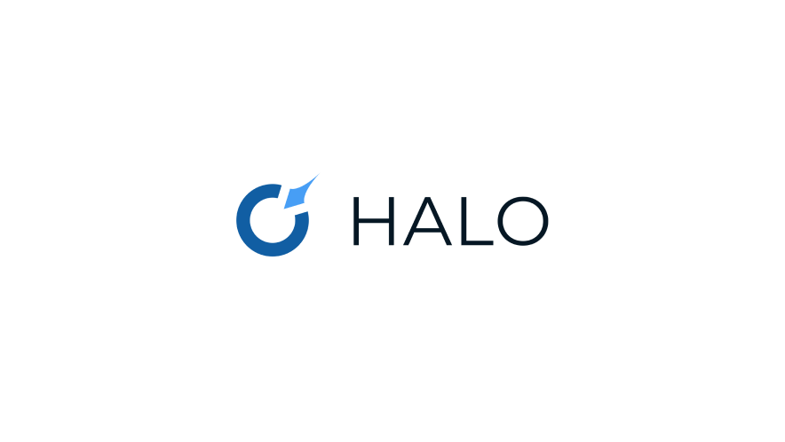
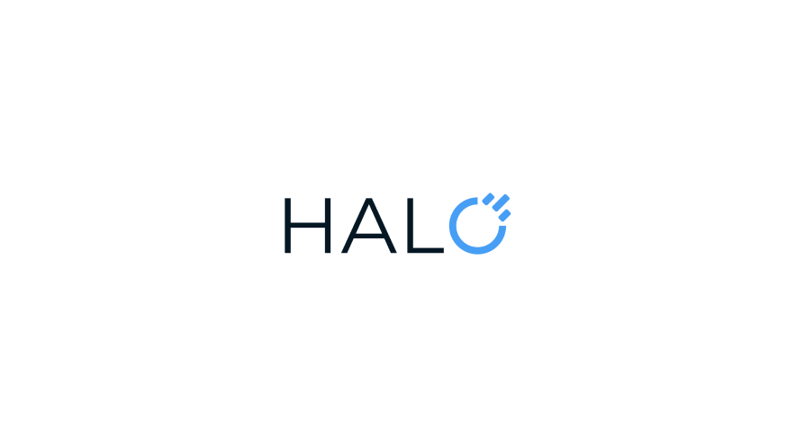

Halo branding
Creating a visual identity for a decision intelligence platform

Overview
When mTab needed a proper brand identity for Halo, its flagship product, I was the designer on it. I worked directly with the CEO, the CPO and the Marketing team to agree the visual direction and then deliver it.
Challenge
The platform had evolved significantly, but the branding hadn't kept pace. As mTab grew and Halo became the core product, it needed an identity that matched what it had actually turned into: an enterprise platform used by some of the biggest brands in the world. We wanted something minimal and professional that would still hold up across product UI, marketing, sales material and presentations.
My role
I led the branding work from concept through to delivery. Working closely with the CEO and CPO ensured the direction aligned with the company's strategic positioning, while collaboration with the Marketing team kept it practical for day-to-day use.
I built out a full logo system: separate marks for mTab and Halo, plus a combined mTab Halo look, each with horizontal and vertical variants and a few colour options. The colour palette was built around a focused set of blues, aligning with the Fluent-based design system already in use across the product. I also created brand guidelines, presentation templates, and supporting assets to ensure consistency across every touchpoint.
Outcome
The new branding pulled Halo's presence together across the product, the website and everything we put out publicly. Marketing and Sales finally had a clear toolkit to work from, and the restraint in the design means the brand sits comfortably next to the enterprise clients it serves.




